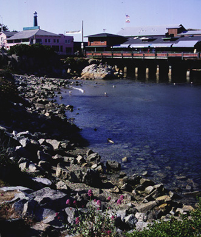

Wharf Waterfront. This view is along the side of the walkway that leads to the wharf from the parking lot. The area has a lot of large rocks that you can sit on and enjoy the view from. To the right you would see boats in the Marina and to the left is the Customs House. The photograph was originally produced with late afternoon sun and a 35 mm camera using Provia slide film, shutter speed 125, F11. Photo copyright Andrea L. Arredondo, May 11, 2000.
Updated by Andrea Arredondo
5/19/00